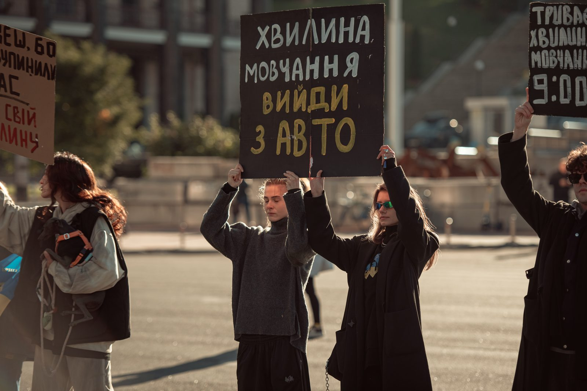

P001

01 — ПРО НАС
ЩО МИ РОБИМОМи формуємо сучасну українську культуру пам’яті — відкриту, людяну й зрозумілу кожному.
«Вшануй» перетворює пам’ять із події минулого на точку в сьогоднішньому дні. Ми працюємо, щоб хвилина мовчання, особисті історії та підтримка живих стали частиною щоденної культури.
9:00
2022 → 2026
02 — НАПРЯМКИ
ЩОДЕННА ПРАКТИКА ПАМ’ЯТІ
Працюємо з людьми, громадами, бізнесами та інституціями. Від особистої історії — до спільної звички.
Допомагаємо містам і спільнотам зробити 09:00 видимою та спільною щоденною дією.
Створюємо практичні матеріали для громад, шкіл, бізнесів та державних установ.
Повертаємо кожній людині ім’я, голос і місце в нашій спільній пам’яті.
Працюємо з містами, щоб пам’ять була присутня в повсякденному просторі без пафосу.
03 — ПРОЄКТИ
ВИБРАНІ СПРАВИ
Кожен проєкт — практичний спосіб пам’ятати про полеглих і бути поруч із живими.
04 — ПРИНЦИПИ
ЯК МИ ПРАЦЮЄМО
Людина, не статистика.
Кожна історія має ім’я й голос.
Дія, не ритуал заради ритуалу.
Пам’ять має змінювати повсякдення.
Тяглість, не разова подія.
Ми будуємо звичку пам’ятати.
05 — ДОЛУЧИТИСЯ